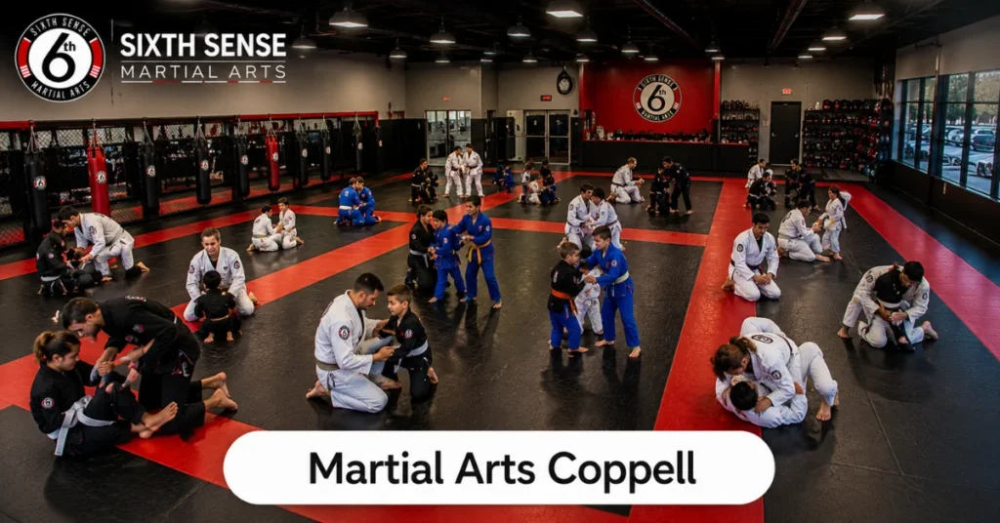
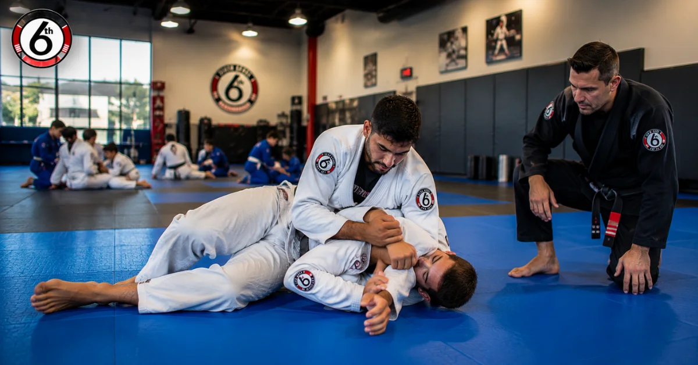
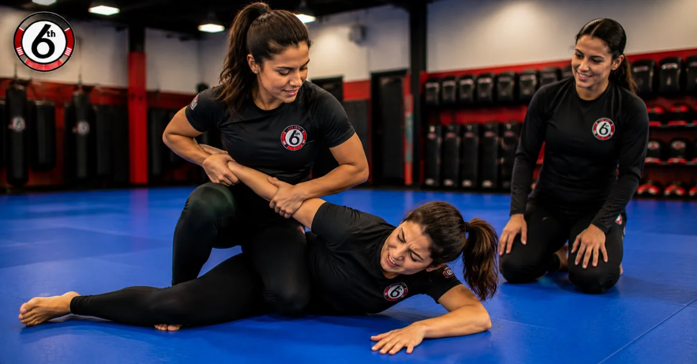

Martial Arts Coppell The Best Gym for Kids and Adults

Why Coppell Families Are Choosing Martial Arts Right Now
Martial arts Coppell has become one of the most searched topics for families and adults across the DFW area in recent years. Parents are looking for activities that build more than just physical strength. They want something that shapes character, builds discipline, and gives their children tools for life. Moreover adults are realizing that a traditional gym membership simply cannot match what martial arts training delivers. At Sixth Sense Martial Arts on MacArthur Blvd in Coppell, TX, we see new students walk through our doors every week ready for a real change. Furthermore the demand for quality martial arts instruction in this area is growing faster than ever. Coppell is no longer just a suburb. It is becoming a serious martial arts community.
What Sets Sixth Sense Martial Arts Apart in Coppell
Not every gym in Coppell offers the same level of instruction and environment. Sixth Sense Martial Arts stands out because it focuses on authentic training backed by real experience. Head coach Matheus brings over 15 years of hands-on BJJ experience to every single class. Additionally coach Anthony Wikstrom leads Muay Thai sessions with a level of technical precision that is rare to find in a local gym. The facility itself is modern, clean, and designed with a thoughtful L-shaped layout that gives everyone enough room to train comfortably. Furthermore the gym maintains high cleanliness standards across all training areas. Consequently students from Coppell, Valley Ranch, Irving, Carrollton, Grapevine, and Lewisville all make the drive because the quality of training here is genuinely worth it.
Brazilian Jiu Jitsu Training for All Skill Levels
BJJ is at the core of what makes Sixth Sense Martial Arts one of the top destinations for martial arts in Coppell. The adult BJJ program covers ground fighting, submissions, positional control, and real-world self-defense applications. Furthermore the teaching methodology breaks down complex techniques into digestible steps so that no student feels overwhelmed regardless of their starting point. One of the most powerful aspects of BJJ is that it teaches leverage over strength. Therefore even smaller individuals can effectively defend themselves against larger opponents. Additionally students who train consistently notice improvements in problem-solving ability, patience, and mental clarity beyond just physical fitness. Whether you are a complete beginner or a seasoned grappler there is a class that fits exactly where you are right now.

Muay Thai Classes That Build Real Striking Power
The Muay Thai program at Sixth Sense Martial Arts is one of the strongest reasons adults in Coppell keep coming back. Known as the art of eight limbs, Muay Thai develops full-body coordination and explosive power through the combined use of fists, elbows, knees, and shins. As a result students develop a striking skill set that works in real-world situations while simultaneously achieving outstanding physical conditioning. Classes mix pad work, heavy bag sessions, and controlled partner drilling to deliver a complete workout every single session. Moreover many members report that Muay Thai training burns more calories than any other fitness routine they have previously tried.
Kids Martial Arts Programs That Parents Trust
Finding the right activity for your child in Coppell is not always easy. However Sixth Sense Martial Arts makes the decision simple with structured kids programs that blend genuine learning with fun. Children learn age-appropriate BJJ techniques in a safe and encouraging environment where every instructor understands how young minds work. Furthermore kids develop focus, discipline, and respect for others through consistent structured training. Because the classes are engaging and well paced, children actually look forward to coming back each week instead of treating it like an obligation. Parents across Coppell consistently share that their children show improved behavior at school and at home after just a few months of training at Sixth Sense. Additionally the gym runs a dedicated anti-bullying program that empowers kids to handle difficult social situations with confidence rather than aggression.
Teen Program Building Confidence Beyond the Mat
The teenage years bring unique challenges that most activities simply do not address. Sixth Sense Martial Arts offers dedicated teen BJJ and Muay Thai classes specifically designed for ages 13 to 17. These classes give teenagers a healthy and structured outlet for energy, stress, and the pressures of daily life. Moreover the training environment teaches accountability, teamwork, and resilience in ways that school sports often miss entirely. Teens who train consistently at Sixth Sense report feeling more confident and focused across all areas of their lives. Additionally the physical conditioning they develop supports athletic performance in other sports they play. Instead of spending hours on screens, teens who train here spend their time building skills, friendships, and self-belief that will carry them well into adulthood.
Self Defense Training Women Can Rely On
Personal safety is a real concern for women in any city and Coppell is no exception. Sixth Sense Martial Arts has developed a dedicated self-defense program specifically designed for women at all fitness levels. The gym already welcomes women into all BJJ and Muay Thai classes alongside a fully supportive and inclusive community. Furthermore the L-shaped facility layout provides added privacy for female practitioners who prefer a more comfortable training space. The techniques taught focus on real-world scenarios including escaping grabs, controlling distance, and staying calm under pressure. Therefore women who train here walk away with practical skills they can genuinely apply rather than theoretical moves that only work in a controlled setting. Above all the goal is empowerment through real knowledge and consistent practice.

Physical and Mental Transformation Through Training
Martial arts training at Sixth Sense delivers a transformation that goes far beyond what any standard gym membership can offer. Physically students see improvements in cardiovascular endurance, flexibility, balance, and functional strength within just the first few weeks of consistent training. Moreover every class challenges the body in a different way so boredom never becomes a barrier to progress. However the mental benefits are equally powerful and often surprise new students the most. Training teaches you to remain calm under pressure, think clearly in stressful situations, and push through discomfort with composure. As a result many members report significantly lower stress levels, better sleep quality, and an overall sense of well-being that carries into every area of their life. These gains compound steadily over time the longer you train.
Flexible Class Schedule for Busy Coppell Residents
One of the most common reasons people delay joining a martial arts gym is scheduling. Sixth Sense Martial Arts understands this challenge and offers classes throughout the day to accommodate different lifestyles. Morning sessions work perfectly for those who want to start the day with energy and focus. Evening classes are ideal for working professionals who need a productive way to decompress after a long day. Additionally weekend sessions are available for those with packed weekday schedules. Because the gym draws students from Coppell, Valley Ranch, Irving, Carrollton, Grapevine, Lewisville, and the broader DFW area, the schedule is designed to be genuinely accessible rather than just convenient on paper. Furthermore the gym offers a free no-obligation three day trial so new students can experience the training before making any commitment.
How to Pick the Right Martial Arts Gym in Coppell
Choosing the right gym is a decision that matters more than most people realize. Therefore it helps to know exactly what to look for before you commit. First always check the credentials and real experience of the coaching staff because a great instructor makes even the hardest technique feel achievable. Second visit the facility and pay close attention to cleanliness, organization, and overall atmosphere. Third observe an actual class and notice how coaches interact with students of different levels. Are they patient, encouraging, and technically precise or do they simply go through the motions. Finally read genuine reviews from real members because their honest experiences reveal what marketing materials never will. Sixth Sense Martial Arts checks every single one of these boxes which is precisely why it has earned such a strong reputation across the Coppell and DFW martial arts community.
A Community That Feels Like a Second Home
Beyond the training itself, what truly separates Sixth Sense Martial Arts from other options in Coppell is the community it has built. Walking into this gym feels genuinely different because members care about each other’s growth and success. Beginners are welcomed with warmth and experienced students take real time to help newcomers find their footing. Furthermore this culture of mutual respect and encouragement does not happen by accident. It is intentionally built and maintained by the coaching staff every single day. The gym also hosts events and community gatherings that bring members closer beyond just the mat. People from all backgrounds, ages, and fitness levels train side by side and the friendships formed here extend well beyond training hours. As many members say, Sixth Sense quickly becomes their second home.
Conclusion
Martial arts Coppell has found its true home at Sixth Sense Martial Arts on 817 S MacArthur Blvd. Whether you are a parent looking for the right program for your child, a teenager searching for confidence and focus, or an adult ready to transform your fitness and mindset, this gym has everything you need under one roof. Moreover the experienced coaching staff, welcoming community, modern facility, and flexible schedule make Sixth Sense the clear top choice for anyone in Coppell and the surrounding DFW area. Furthermore with a free three day trial available there is absolutely no risk in taking that first step. Come experience the training for yourself and discover what becoming part of the Sixth Sense family truly feels like. Your journey starts with a single step on the mat.
Contact Us
Have questions about our martial arts classes in Coppell? We would love to hear from you. Reach out today and let us help you find the right program for you or your child.
📍 817 S MacArthur Blvd #100 Coppell TX 75019
📞 (469) 972-7800
Follow Us on Social Media
Stay connected with the Sixth Sense Martial Arts Coppell community. Follow us for class schedules, training highlights, student success stories, and special offers.
FAQ’s
Sixth Sense Martial Arts at 817 S MacArthur Blvd Suite 100 in Coppell TX is widely regarded as the top choice for BJJ and Muay Thai training in the area. The gym offers programs for kids, teens, and adults led by experienced coaches with over 15 years of hands-on instruction experience.
Sixth Sense Martial Arts in Coppell offers dedicated kids BJJ classes, teen martial arts programs, and a specialized anti-bullying program for children. Classes are age-appropriate, safe, and designed to build confidence, discipline, and focus alongside physical fitness skills.
Yes, Sixth Sense Martial Arts welcomes complete beginners with no prior experience required. The coaching staff starts every new student from the ground up with clear instruction and a supportive training environment. A free three day trial is available so you can experience the gym before committing.
Sixth Sense Martial Arts offers competitive and reasonable pricing compared to other gyms in the Coppell and DFW area. Members consistently report excellent value for the quality of instruction and facility provided. Contact the gym directly at (469) 972-7800 for current membership pricing details.
Yes, Sixth Sense Martial Arts offers self-defense training specifically for women alongside its regular BJJ and Muay Thai programs. The gym provides a safe, inclusive, and supportive environment where women of all fitness levels can train comfortably and build practical real-world self-defense skills.
Sixth Sense Martial Arts serves students from Coppell and surrounding areas including Valley Ranch, Irving, Carrollton, Grapevine, Lewisville, and the broader DFW metroplex. The central location on MacArthur Blvd makes it easily accessible for residents across the entire North Dallas area.
Train with us in Coppell
The first class is free. Shorts, a t-shirt and a water bottle. We lend the rest.
Book a free class